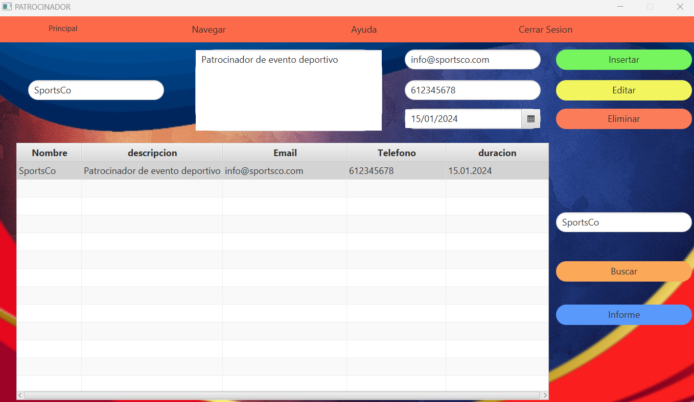

Fig 1: Ventana Patrocinador
Al abrir la ventana, se mostrará una ventana como la de arriba, solo se podra acceder como usuario tipo Socio, ya que los voluntarios no tienen acceso, los socios podran crear, modificar, filtrar o eliminar los datos de la tabla, ademas podra generar informes
Fig 2: Al seleccionar cualquier fila de la tabla ,se situaran los datos de esa fila en sus correspondientes campos "
se mostraran en los fields correspondientes
Fig 3: En el filtrado contamos con un unico textField encargado de filtrar por nombre o fecha :
Para usarlo simplemente debera introducir un nombre o fecha, si es por nombre tendra que escribir caracteres unicamente, si coincide con un campo o campos de la tabla se actualizara con esos campos, en el caso de la fecha tendra que ser introducida en formato yyyy-MM-dd y se repetira el mismo proceso que con el nombre
Fig 4: Por ejemplo, al elegir filtrar por nombre y ecribir un nombre que existe, la tabla mostrará dicho patrocinador
En caso de que se intente filtrar un dato inexistente saltara un error.
Fig 5: En caso de que intente filtrar por fecha y escriba una fecha existente la tabla mostrara dicho patrocinador
En caso de que quieras resetear el filtro y vuelva a salir la tabla con todos los datos en el text field de busqueda lo tendras que vaciar y pulsar el boton de buscar
Fig 6: Para generar un informe solo tiene que darle al botón de informe. Tardará solo unos segundos en mostrar un informe

He aquí el informe:
Fig 6.2: Para insertar un patrocinador tendra que escribir todos los campos en sus formatos correctos una vez esten todos escritos pulsara en el boton de insertar y si todo esta correctamente saldra un mensaje informando que se ha creado un nuevo patrocinador en caso contrario saldra un error informando del error cometido
Si todo ha salido como se esperaba:Fig 6.2: Para modificar un patrocinador tendra que seleccionar una fila de la tabla y modificar el campo que desee con su formato correcto una vez este seguro de que lo quiere modificar debera pulsar en el boton de insertar y si todo ha salido correctamente saldra un mensaje informando que se ha modificado el patrocinador en caso contrario saldra el error cometido
Si todo ha salido como se esperaba:
Fig 6.2: Para eliminar un patrocinador tendra que seleccionar la fila de la tabla que quiera eliminar pulsara en el boton de eliminar y si todo ha salido correctamente saldra un mensaje informando que se ha borrado el patrocinador, en caso contrario saldra el error cometido
Si todo ha salido como se esperaba:
Fig 7: Si desea salir de la aplicación, haga click en la X de arriba a la derecha y se abrirá una ventana de advertencia para confirmar su decision
<Fig 12: Navegación Menubar
En la parte posterior de la aplicacion tenemos un menubar para navegar entre distintas ventanas, con varias opciones:
- Principal:
Esta opcion redigira a la ventana principal ya vista nada mas iniciar sesion - Navegación:
Tiene 3 opciónes, con cada una de las ventanas interactivas principales, cada una de estas te enviará a la ventana seleccionada - Ayuda:
Nos redirigira a la ventana de ayuda de cada ventana - Cerrar sesión:
Cierra la sesión y te envia a la ventana de inicio de sesion de nuestra app.